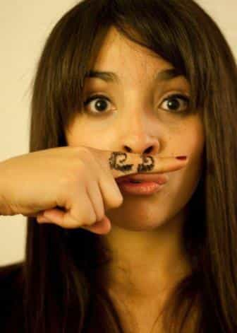

< < < Back
5 Stupid Photos Girls Can’t Stop Taking – Return Of Kings
One of humanity’s greatest mistakes was putting a camera in the hand of every woman. Not only did it convince an entire generation of chicks that their banal activities were art, it allowed them to gorge themselves on bottomless portions of attention-whoring. Nowadays, the average gaggle of girls spends half their day taking pictures of one another. They spend the other half uploading them to their various social-media accounts, and compulsively checking back for “likes.” To make matters worse, these pictures are completely bankrupt of even a crumb of originality.
It’s well documented that women are particularly susceptible to copy-catting. But originality is rarely the goal. Just looking cuter than your friend doing the same thing is enough. It used to be just about duck face and Myspace angles, but today’s woman has discovered new ways to walk with the herd.
5. The So-Called Ugly Selfie
Despite the argument that the “ugly selfie” is some sort of political statement against conventional beauty standards, it’s little more than the latest flavor of female attention-seeking. The message is obvious: “Look, I can look cute even when I make a silly face.”
4. Mustache Shots
I’m not sure where the whole thing originated, but girls became obsessed with having mustaches seemingly overnight. I can’t help but suspect this is merely another instance of the latent penis envy that a growing number of women exhibit in their daily behavior.

3. Cliché Travel Destination
Traveling is one thing. Taking that same shot in front of Machu Picchu or “straightening” the Tower of Pisa is another.
2. Novelty Races (Especially by Fat Girls)
The number of girls suddenly interested in doing 5Ks has mysteriously increased with the proliferation of smart phones. Why? Because it’s the perfect photo op. This is especially popular with dumpy semi-fatties, who can use their pictures as plausibly evidence that they’re actually “athletic,” and are merely genetically predisposed to being overweight (not that they spend the other 364 days of the year chugging Starbucks Milkshakes). It should come as no surprise that some of these races involve eating unhealthy junk food as part of the “challenge.”
1. The Butterfly Pose
This has quickly become the duet (or group) pose of choice. The format is simple: (1) Hug your bestie tightly with one arm, forming a Siamese twin-like bond in the center; (2) Position your exterior arms akimbo; and (3) Tilt your head slightly to maximize “cuteness.” This pose has become so ubiquitous, I challenge you to scan any social-media site for five minutes without seeing it a dozen times.
Attention whoring and copy catting may very well be the female condition, but unless we enforce some degree of originality, we’ll continue to be barraged with an endless stream of the same. Next time you see one of these played-out photos, be sure to call it out.
Read More: 10 Tell-Tale Signs She’s a Secret Internet Fatty


{kind=link}
{kind=link}
{kind=link}
{kind=link}
{kind=link}
{kind=link}
{kind=link}
{kind=link}
{kind=link}